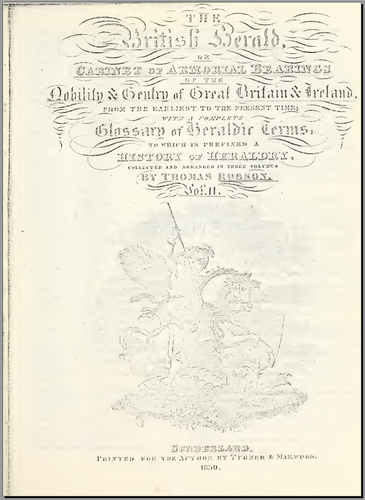

The British Herald or Cabinet of Armorial Bearings of the Nobility and Gentry of Great Britain & Ireland from the Earliest to the Present Time... Thomas ROBSON, Sunderland 1830
This is a comprehensive work, in three volumes, however volumes I and III are only available as PDFs from Google Books and they are NOT text searchable, the PDF just contains page images. Volume II is available directly from archive.org, (see starred item below) but contains only the second half of the alphabet of family names. For this reason I can't really recommend this as there are alternative works that are fully searchable, for example The General Armory of Burke ( generalarmoryofe00burk ) for family names and An Introduction to Heraldry ( introductiontohe00burk ) for background information.
For completeness, I list here the contents of these works, numbers are PDF page numbers:
(Note that there are several of each volume, scanned from different sources, but I believe all are the same edition)
Volume I: ( britishheraldor04robsgoog and britishheraldor02robsgoog ) Preface 12 History of Heraldry 16 The Different Degrees of Nobility and Gentry 46 Royal Arms and Badges 63 Orders of Knighthood 80 Armorial Ensigns of Cities etc. 62 Funerals 195 Alphabet of Arms, AARON -> HANINGFIELD 204 - 659 Volume II: ( *** britishheraldorc02robs *** - also britishheraldor05robsgoog and britishheraldor03robsgoog ) Alphabet of Arms, HANINGTON -> ZYMOD 9 - 1301 Volume III ( britishherald01robsgoog and britishheraldor00robsgoog ) Glossary 9 Mottoes 98 Additions and Corrections 149 Addenda to Glossary 301 Addenda to Mottoes 302 Other updates 303 Plates 306 - 442